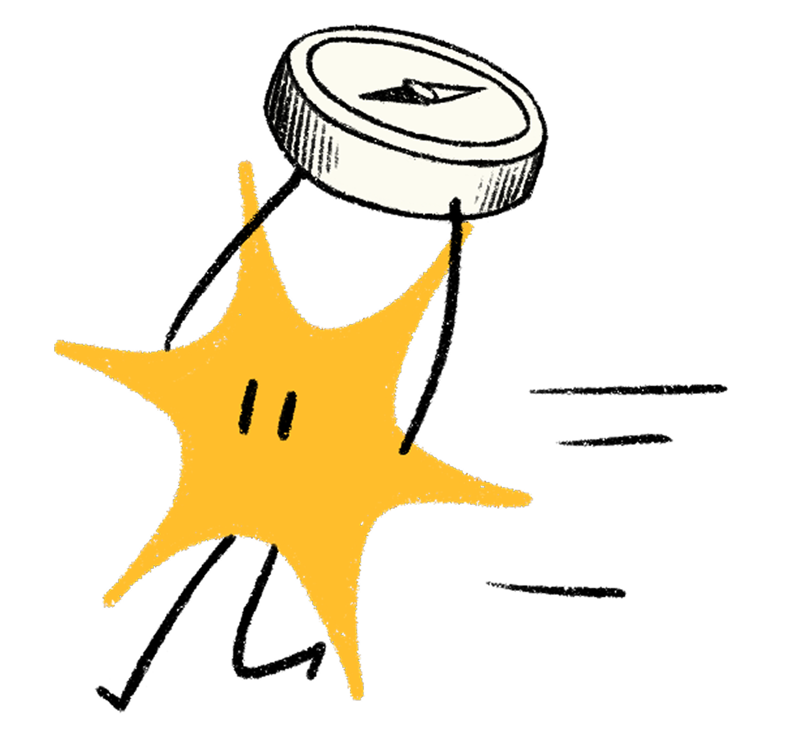
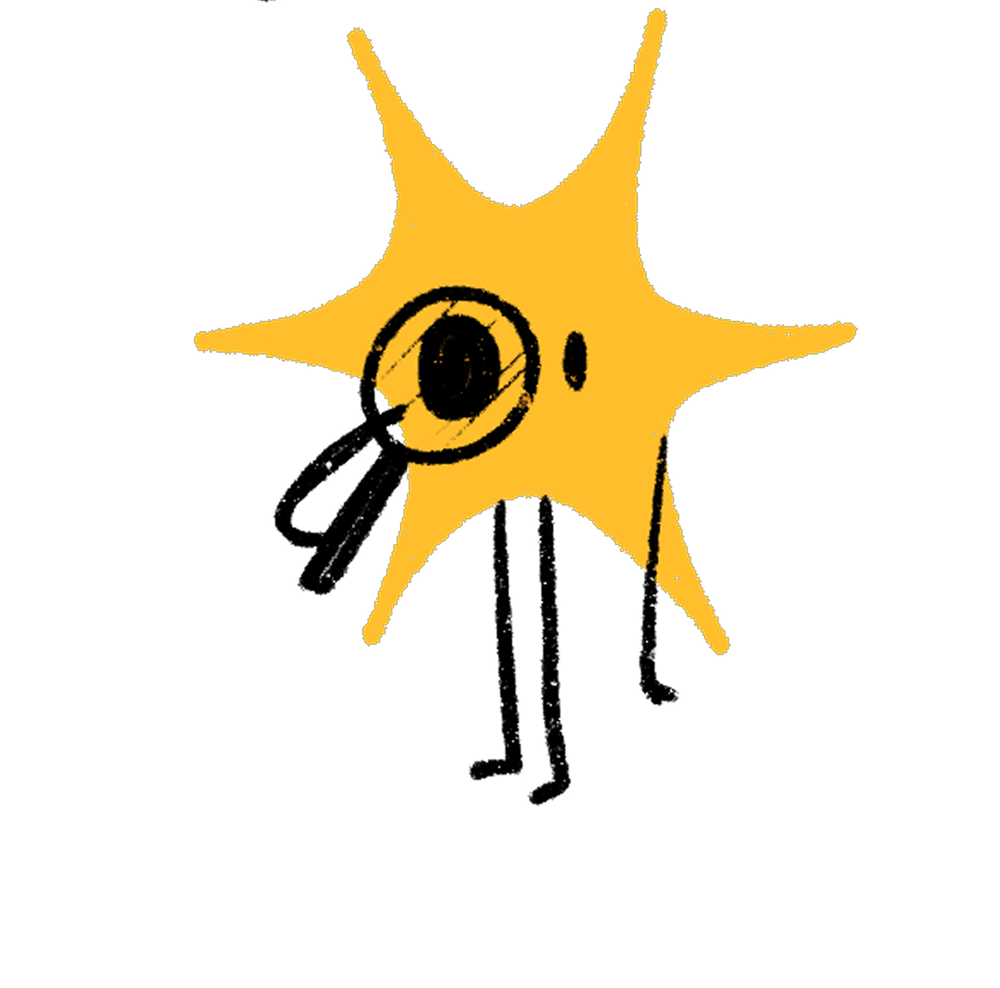
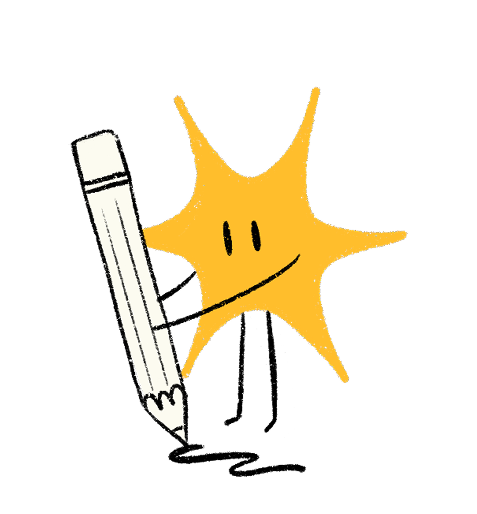

Decision tree, regole d’oro e template pronti all’uso
~10 minuti — da qui portate a casa gli strumenti operativi

Parti dalla task, arrivi allo strumento giusto
Da stampare e appendere accanto al monitor

Copiate, incollate, compilate — funziona con qualsiasi LLM

Domande, feedback, idee → siamo qui
Risorse interne: Handbook MemorAIz · Canale #ai-experiments · Repository prompt condivisi
Bibliografia completa in references/sources.md
Blocco 0 — Setup
Sharma et al. (2024) — Sycophancy in LLMs · arXiv
Perez et al. (2023) — Understanding Sycophancy · Anthropic/arXiv
Nature npj Digital Medicine (2025) — Sycophancy in medical AI
Blocco 1 — Storia + Mappa
Cornell Chronicle — Perceptron di Rosenblatt (1957)
HISTORY.com — Deep Blue vs Kasparov (1997)
Vaswani et al. (2017) — Attention Is All You Need · NeurIPS
OpenAI (2022) — ChatGPT release
Meta AI Blog (2025) — Llama 4 (400B params, 17B active)
Epoch AI (2025) — Costi training modelli frontier
Wei et al. (2022) — Emergent Abilities · arXiv
Blocco 2 — Fondamenti ML
Anthropic (2026) — Claude Opus 4.6
OpenAI (2025) — GPT-5 e GPT-5.2
Google DeepMind (2025–2026) — Gemini 2.5 / 3
DeepSeek (2025) — R1 training con GRPO
Largo.dev (2026) — Frontier LLM Architectures
Bibliografia completa in references/sources.md
Blocco 3 — Come funzionano gli LLM
OpenAI tiktoken — Tokenizer o200k_base (~200K vocab)
Ferrara et al. (2025) — Optimizing LLMs for Italian · arXiv
IBM — LLM come modelli di next-token prediction
Ouyang et al. (2022) — InstructGPT: SFT → RLHF · OpenAI/arXiv
Rafailov et al. (2023) — DPO · arXiv
Vaswani et al. (2017) — Attention Is All You Need · arXiv
Liu et al. (2024) — Lost in the Middle · TACL
OpenAI (2024) — SimpleQA benchmark
Blocco 4 — Context Engineering
Anthropic (2025) — Effective Context Engineering for AI Agents
Karpathy (2025) — «Context engineering is the delicate art...»
Teo (2023) — CO-STAR Framework · Towards Data Science
Chroma Research (2025) — Context Rot
OWASP (2025) — LLM01 Prompt Injection
Phil Schmid (2025) — The New Skill in AI is Context Engineering
Bibliografia completa in references/sources.md
Embeddings
OpenAI (2024) — text-embedding-3-small/large
Cohere (2025) — Embed v4 (multimodale, 128K context)
Google (2025) — gemini-embedding-001 (MTEB #1)
Migdał (2017) — king − man + woman ≈ queen · Blog
Kusupati et al. (2022) — Matryoshka Representation Learning · NeurIPS
TensorFlow — Embedding Projector (tool interattivo)
RAG
Weaviate (2025) — Chunking strategies per RAG
NVIDIA (2024) — Chunking benchmark
Analytics Vidhya (2025) — Top 7 reranker per RAG
Anthropic (2024) — Contextual Retrieval (−67% failure)
Microsoft Research (2024) — GraphRAG
Stanford Law (2025) — RAG hallucinations in legal AI (17–33%)
RAGFlow (2025) — State of RAG 2025
Bibliografia completa in references/sources.md
Blocco 6 — Reasoning e Benchmark
Wei et al. (2022) — Chain-of-Thought Prompting · NeurIPS
OpenAI (2025) — o3 e o4-mini reasoning models
Anthropic (2025) — Claude extended thinking
DeepSeek (2025) — R1 reasoning
Hendrycks et al. (2021) — MMLU benchmark · ICLR
LMSYS/UC Berkeley (2023) — Chatbot Arena
Balloccu et al. (2024) — Data contamination · EACL
Blocco 7 — Agenti
Anthropic (2024) — MCP annuncio e donazione Linux Foundation
Anthropic (2024) — Building Effective Agents
OWASP (2025) — Top 10 for LLM Applications & Agentic AI
UC Berkeley (2025) — BFCL V4 Function Calling Leaderboard
MCP Blog (2025) — One Year of MCP (17.800+ server)
Figma (2025) — Figma MCP Server
OpenReview (2025) — Log-To-Leak: Prompt Injection via MCP
Bibliografia completa in references/sources.md
Blocco 8 — Checklist Operativa
Anthropic (2024) — Building Effective Agents
MIT Sloan (2025) — Prompt templates > prompt engineering
AI Multiple (2025) — Hallucination rate comparison (0.7%–33%)
Lakera (2025) — Guida completa allucinazioni LLM
Parloa (2024) — Framework prompt engineering (+67%)
MemorAIz Handbook (2025) — Pattern DSPy a 4 livelli
IBM (2025) — LLM Temperature best practice
Paper scientifici — Bias e distribuzione
Min et al. (2022) — Rethinking Role of Demonstrations · EMNLP
Wei et al. (2022) — Chain-of-Thought Prompting · NeurIPS
Li et al. (2024) — DETAIL Matters: specificità migliora accuracy · arXiv
Schulhoff et al. (2024) — The Prompt Report (1.565 paper, 58 tecniche) · arXiv
Safety e Alignment
Anthropic (2024) — Alignment Faking in LLMs (12% casi)
Anthropic (2025) — ASL-3 Protections
OpenAI (2025) — Preparedness Framework v2